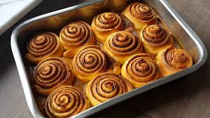

Los rolls de canela son una delicia que combina la suavidad del pan dulce con la explosión de sabor que proporcionan la canela y el azúcar. Son ideales para un desayuno especial, una merienda o simplemente para satisfacer un antojo dulce. Imagina un domingo por la mañana, con la casa llena del aroma a canela recién horneada, y un café caliente esperando a ser acompañado por un esponjoso rollo de canela. ¡Irresistible!
Estos rolls tienen su origen en Europa del Norte, especialmente en Suecia, donde son conocidos como “kanelbullar”. Se dice que en la antigüedad eran un lujo reservado para ocasiones especiales debido al alto costo de las especias como la canela. Hoy en día, los rolls de canela se han popularizado en todo el mundo, con múltiples versiones que van desde las más tradicionales hasta las más innovadoras, incorporando glaseados, frutos secos o incluso chocolate.
Receta de rolls de canela rápida y fácil
Preparar rolls de canela en casa puede parecer una tarea laboriosa, pero con esta receta rápida y fácil, te asegurarás de tener un resultado delicioso sin pasar horas en la cocina. La clave está en utilizar una masa que no requiere mucho tiempo de levado, lo que acelera el proceso sin comprometer el sabor ni la textura.
Tiempo de preparación
Para esta receta de rolls de canela rápida y fácil necesitarás aproximadamente 1 hora y 45 minutos en total. Este tiempo incluye:
15 minutos para preparar los ingredientes y la masa.
1 hora para el levado de la masa.
10 minutos para armar los rolls.
20 minutos para hornear.

Los rolls de canela combinan la suavidad del pan dulce con la explosión de sabor de la canela y el azúcar.
Ingredientes
4 tazas de harina de trigo.
1 sobre de levadura seca (7 gramos).
1/4 taza de azúcar.
1 taza de leche tibia.
1/4 taza de mantequilla derretida.
1 huevo.
1/2 cucharadita de sal.
1/2 taza de azúcar moreno.
2 cucharadas de canela en polvo.
1/4 taza de mantequilla blanda (para el relleno).
Cómo hacer rolls de canela rápida y fácil, paso a paso
En un bol grande, mezcla la harina, la levadura seca, el azúcar y la sal.
Añade la leche tibia, la mantequilla derretida y el huevo. Mezcla bien hasta formar una masa.
Amasa la masa en una superficie enharinada durante unos 5 minutos hasta que esté suave y elástica.
Coloca la masa en un bol ligeramente aceitado, cúbrela con un paño y deja que repose en un lugar cálido durante aproximadamente 1 hora, o hasta que haya duplicado su tamaño.
Mientras tanto, mezcla el azúcar moreno y la canela en un bol pequeño.
Una vez que la masa haya levado, extiéndela sobre una superficie enharinada formando un rectángulo.
Unta la masa con la mantequilla blanda y espolvorea la mezcla de azúcar moreno y canela de manera uniforme.
Enrolla la masa desde uno de los extremos largos hasta formar un cilindro. Corta en porciones de aproximadamente 2 cm de grosor.
Coloca los rollos en una bandeja para hornear previamente engrasada, dejando un pequeño espacio entre cada uno.
Deja reposar los rollos durante unos 10 minutos mientras precalientas el horno a 180°C.
Hornea los rolls de canela durante 20 minutos o hasta que estén dorados.
Sírvelos tibios, opcionalmente cubiertos con un glaseado de azúcar.